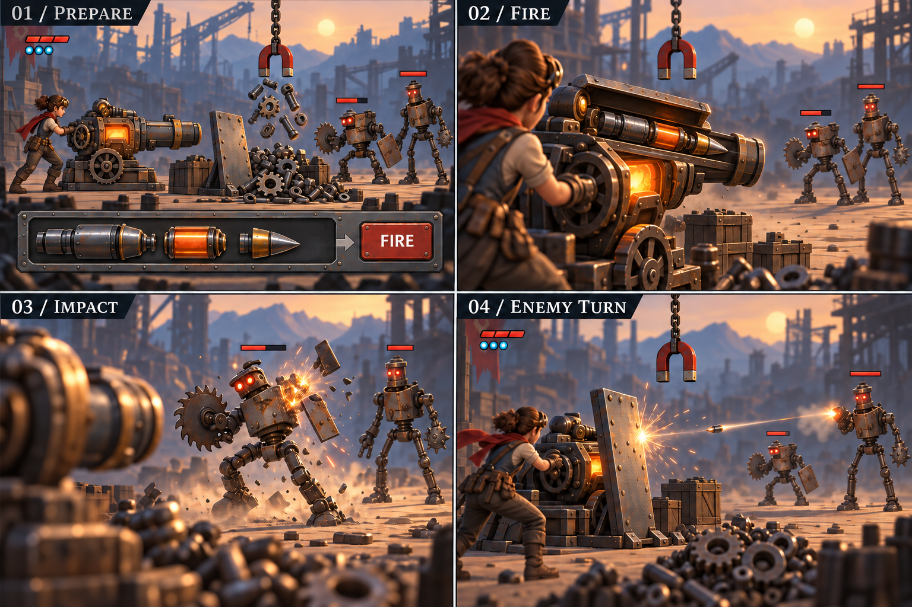

16B · PrepareGather scrap and assemble the shot.16C · ActionSee loading, firing, impact and the enemy response.

Loading version: the three physical parts join in the cannon’s open channel. The impact and enemy response illustrate camera framing; they do not select combat or turn rules.
Shared objects in motion
This rough 3D study tests whether the same objects and remaining scrap carry across both cameras. Its models and scenery are simpler than the chosen art. It is a scripted presentation test, with no playable combat.